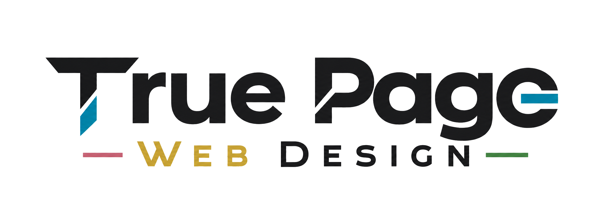
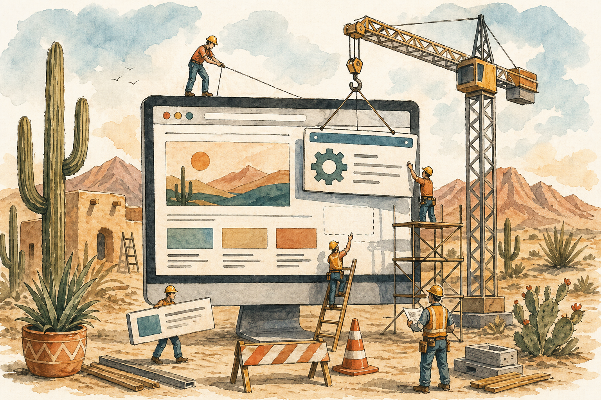

Desert Yards Landscaping
A refined southwestern concept for a fake landscaping company with water-wise positioning, a before-and-after carousel, owner bio, and local contact structure.


Example websites
A small collection of redesign directions that show how a business can feel clearer, faster, and more trustworthy from the first click.
A refined southwestern concept for a fake landscaping company with water-wise positioning, a before-and-after carousel, owner bio, and local contact structure.
A completely fictional four-page realtor site with working-class warmth, refined white space, soft motion, listings, a realtor showcase, and a statistics-rich bio.
A premium Las Cruces contractor concept focused on remodels, roof coatings, stucco repair, local SEO, and a quote-first contact flow.
A more understated xeriscaping demo with practical service copy, simpler structure, and a warm local-business feel.
A cool-toned bookkeeping concept with no photography, no southwest cues, and a more editorial, information-first layout.